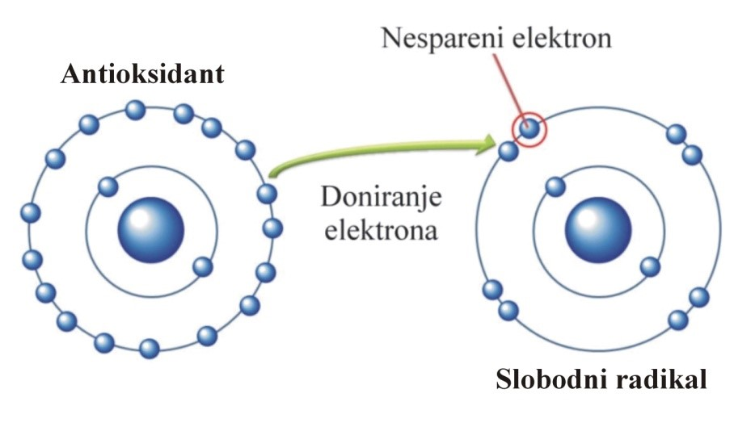

|

Djelovanje antioksidanata na slobodne radikale |
Pored navedenog djelovanja mogu i da: usporavaju starenje, snižavaju razinu holesterola, smanjuju rizik od ateroskleroze, štite od srčanog i moždanog udara, smanjuju rizik nastanka kancera, pomažu suzbijanju rasta tumora, pomažu detoksikaciju kancerogenih tvari, usporavaju napredovanje Alzheimerove bolesti, štite oči od procesa odumiranja makule, pomažu u odbrani od štetnih posljedica duhanskog dima, pružaju zaštitu od hroničnih plućnih bolesti kao što su astma, bronhitis i pružaju zaštitu od ekoloških zagađivača (Prior, 1998).
Da bi se održao optimalni nivo antioksidanasa u organizmu, sljedeće dnevne doze su preporuka odraslim zdravim osobama:
| Antioksidant | Preporučena dnevna doza |
| Vitamin C | 250-500 mg |
| Vitamin E | 100-200 mg |
| Beta karoten | 10-15 mg |
| L-cistein | 0,5-1 g |
| Koenzim Q10 | 30-120 mg |
Među brojnim podjelama antioksidanasa najjednostavnija je ona na antioksidativne enzime i niskomolekularne antioksidanse.
U antioksidativne enzime ubrajaju se oni koji nastaju u ćelijama (superoksid-dismutaza, katalaza, glutation-peroksidaza...) i razgrađuju manje aktivne oblike ROS u nenabijene neaktivne molekule, kao i veliku grupu enzima koji obnavljaju oštećene molekule DNK i proteina.
Drugu grupu antioksidanasa čine brojne jednostavne ili složene molekule koje pretvaraju nezasićene, vrlo aktivne molekule slobodnih radikala u nove, hemijski zasićene, neaktivne oblike koji nisu opasni za normalnu aktivnost organizma i koji djeluju kao “hvatači” SR (vitamin E, vitamin C, estrogen, flavonoidi, bilirubin, likopen, koenzim Q, albumin, transferin).